|
A Pickerel frog (Rana palustris) near Spectacle lake Chester, Nova Scotia, Canada. (D. Majaess, S. Ernst, L. Guy-Bergey) 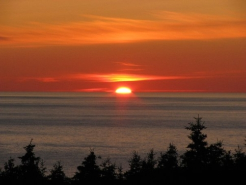 Bay St. Lawrence, Cape Breton, Nova Scotia, Canada. (D. Majaess) 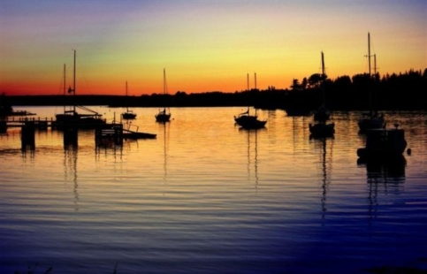 Chester, Nova Scotia, Canada. (D. Majaess) 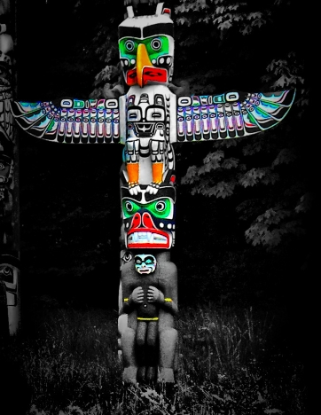 Thunder Bird Totem Pole, Carved by Kwakiutl artist Yaakutlas (1924). Vancouver, British Columbia, Canada. (D. Majaess) 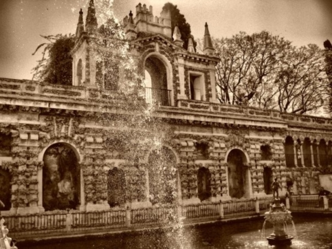 Seville, Spain. (D. Majaess) 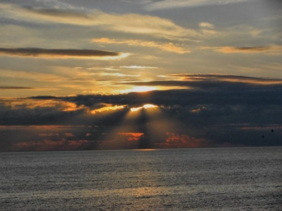 The Arches Provincial Park, Newfoundland & Labrador, Canada. (D. Majaess, Beth Sampson & Jon Savoy) 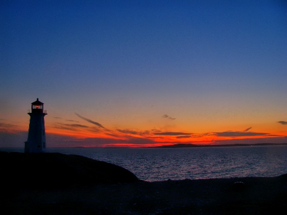 Peggy's Cove, Nova Scotia, Canada. (D. Majaess) 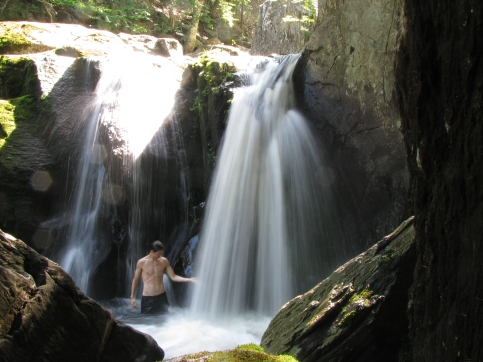 Three Pools, White Rock, Nova Scotia, Canada. (D. Majaess & A. Tremaine) 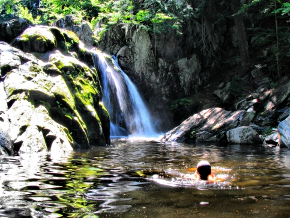 Three Pools, White Rock, Nova Scotia, Canada. (D. Majaess & A. Tremaine) 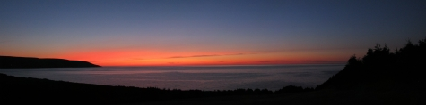 Bay St. Lawrence, Cape Breton, Nova Scotia, Canada. (D. Majaess) 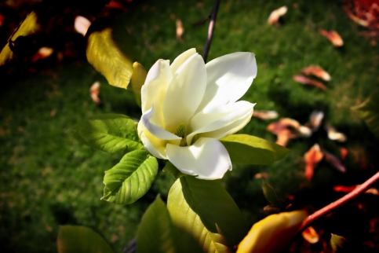 Public Gardens, Halifax, Nova Scotia, Canada. (D. Majaess) |
Cranberry Lake, Nova Scotia, Canada. (D. Majaess, L. Gesner & D. Mealiea)  The Arches Provincial Park, Newfoundland & Labrador, Canada. (D. Majaess, B. Sampson & J. Savoy) 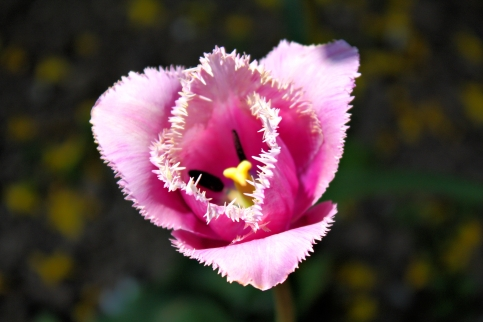 Halifax, Nova Scotia, Canada. (D. Majaess) 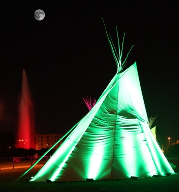 Halifax Commons during the Membertou 400 'powwow', Nova Scotia, Canada. (D. Majaess) 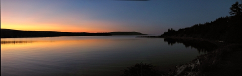 St. Anne, Cape Breton, Nova Scotia, Canada. (D. Majaess) 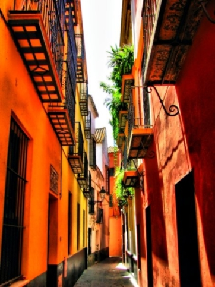 Seville, Spain. (D. Majaess) 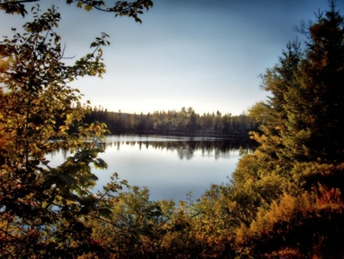 Labrador Lake, near Chester, Nova Scotia, Canada. (D. Majaess, J. Ramsey & B. Sampson) 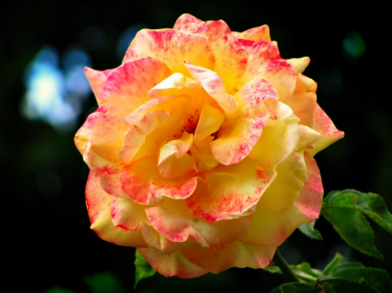 (D. Majaess) 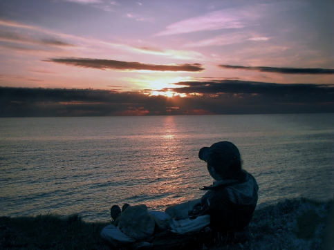 The Arches Provincial Park, Newfoundland & Labrador, Canada. (D. Majaess, B. Sampson & J. Savoy) 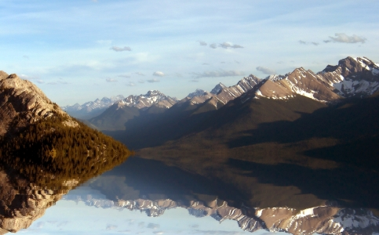 A panoramic composition of the famed Canadian Rockies, Alberta, Canada. (D. Majaess) 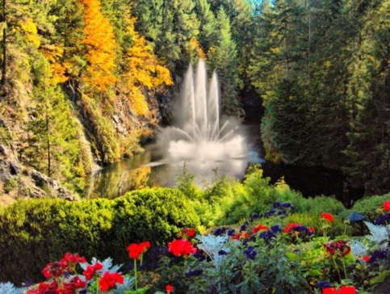 Butchard Gardens, near Victoria, British Columbia, Canada. (D. Majaess) |
|

.: Astronomy Research - Photographic Musings - Timeless Recordings - Contact Info :.